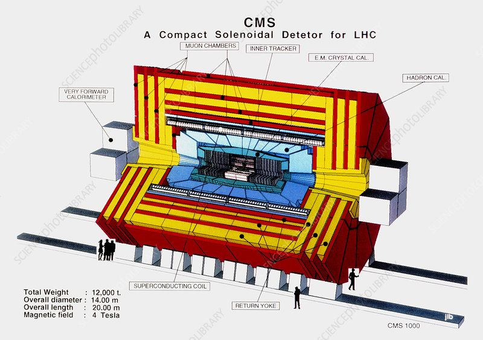

The CMS experiment
The Compact Muon Solenoid (CMS) is a general-purpose detector at the Large Hadron Collider (LHC). It has a broad physics program ranging from studying the Standard Model (including the Higgs boson) to searching for extra dimensions and particles that could make up dark matter. Although it has the same scientific goals as the ATLAS experiment, it uses different technical solutions and a different magnet-system design.
The CMS detector is built around a huge solenoid magnet. This takes the form of a cylindrical coil of superconducting cable that generates a field of 4 tesla, about 100,000 times the magnetic field of the Earth. The field is confined by a steel 'yoke' that forms the bulk of the detector's 14,000-tonne weight.
The CMS detector is shaped like a cylindrical onion, with several concentric layers of components. The layers closest to the beam are designed to identify different types of particles, while the outer layers are designed to measure the energy of the particles produced in the collisions.
